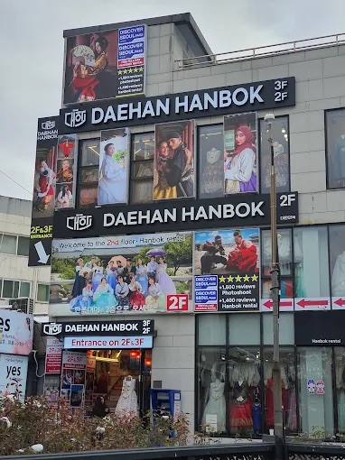

Prefer to scan a QR code?

Thursday, 22 October
🍻 Pre-wedding get-together
After-parties aren't really a Korean thing — so we're starting early instead. Food, drinks, and a relaxed evening to get everyone acquainted before the big day.
- When
- Thu 22 Oct, 6:30 PM
- Where
- Undefine Party Room
A 600 m walk from Toyoko Inn View map ↗ - What
- Finger-food buffet & drinks
Saturday, 24 October
🕰️ How the day runs
The short version: get into hanbok in the morning, travel across town, explore the venue, ceremony at 3, then eat.
-
10:30
Team 1 — change into hanbok Daehan Hanbok
-
11:00
Team 2 — change into hanbok Daehan Hanbok
-
12:00
Head to the venue Subway · ~35 min
If you booked the makeup shop, be there at 12:00 PM. Naver Map ↗
-
13:00
Arrive, wander, take photos King Sejong Memorial Hall
-
15:00
Ceremony begins ✨ Main outdoor hall
-
16:00
Buffet 2nd floor (Korean counting — that's one flight up)
-
17:30
Return hanbok Back to Daehan Hanbok
Dress code
👘 Wear a hanbok with us
Ours is a traditional Korean ceremony, so we'll be in wedding hanbok — and we'd love for you to join in. It's optional, but it makes the photos unforgettable. If you'd rather not, come in whatever you're comfortable in.
We've reserved a shop for you — and we're covering:
- Standard hanbok rental
- Standard hair styling
Fancy an upgrade? A special hanbok or a special/premium hair set is all yours — just pay the difference at the shop, roughly ₩15,000–20,000.
Daehan Hanbok English spoken
📍 133-2 Sajik-ro, Jongno-gu, Seoul
🚇 Right outside Exit 4, Gyeongbokgung Station (Line 3)

Hanbok shop → venue
🚇 Getting to the wedding
- Gyeongbokgung Station 경복궁역 · Line 3 Board northbound, toward Daehwa.
- Transfer at Yaksu Station 약수역 Change to Line 6.
- Korea University Station 고려대역 · Line 6 Get off and leave by Exit 3.
Last stretch — pick one
🚐 Free shuttle bus
Runs every 15 minutes from Exit 3 straight to the venue. Wait at the marked pick-up area.
🚶 Walk it — 750 m
About 10–15 minutes. The route is simple and will be signposted for guests.

👶 Travelling with a baby, or luggage in tow? A taxi from the city centre to the venue runs about ₩10,000–15,000. Totally worth it.
King Sejong Memorial Hall · 세종대왕 기념관
🎎 What's waiting for you
A traditional venue and museum honouring King Sejong, who created Hangul. Hanok-style buildings, gardens, and far too many good photo spots.
A photographer just for guests
Look for the teenager with a "Guest Photo" name card — a seriously keen young photographer. Ask him for a shot. See his work ↗
Coffee truck
Free coffee and drinks, parked near the venue. Just hand over your coffee coupon.
Group photo
Right after the ceremony — everyone in one frame. Please don't sneak off.
Buffet
Korean and Western dishes upstairs after the ceremony. Bring your meal ticket.
🌿 Vegetarian & vegan at the reception
The buffet menu is pre-set, but we've pushed for as many veggie-friendly dishes as possible — salads, rice, and plenty of vegetable sides.
One honest heads-up: some Korean dishes use fish-based sauces or anchovy stock, which is hard to avoid in a traditional menu.
If you're vegan, we'll order dedicated vegan food for you — just let us know in advance, in the group chat or by message.
🕊️ The ceremony, step by step (전통혼례 식순)
- Procession 신행행렬 — the couple enters in ceremonial attire.
- Greeting rituals 친영례 & 전안례 — the groom offers a wooden goose, a symbol of faithfulness.
- First performance 1차 축하공연 — traditional music or dance.
- Bowing ceremony 교배지례 — deep bows exchanged, for mutual respect.
- Respects to parents 서천지례 & 서배우례 — thanking both families.
- Sharing of wine 합근지례 — one gourd cup, drunk by both. Now they're one.
- Second performance 2차 축하공연 — a blessing for the road ahead.
- Exit 신랑·신부 퇴장 — married, and out.
- Group photo & feast 기념사진 & 피로연 — your cue to eat.
Only if you want to
🎁 About gifts
Many of you are flying across the world to be there. That is the gift — nothing else is expected.
If you'd still like to give something: Korean weddings skip physical presents in favour of 축의금 (chug-ui-geum) — money in an envelope. There's a gift desk in the lobby of the main building where a family member will greet you and look after it.
Typical amounts, for reference:
- ₩50,000 acquaintances & casual guests
- ₩100,000 friends & colleagues
- ₩200,000+ close friends & family
💳 Rather not carry cash? There'll be a PayPal QR code at the gift desk — just scan it and send whatever you'd like. No envelope, no hunting for an ATM.
📸 Send us your photos
We'd love to see the day through your eyes. Drop everything you shoot into our shared folder after the wedding.
Upload to Google Drive ↗Beyond the wedding
✈️ Korea survival kit
Everything below is optional reading — open only what you need.
📱 Apps to download before you fly
🚇 Getting around Seoul
T-Money card — buy one at any convenience store (including at the airport). It works on subways, buses, taxis and even shop purchases. Tap in, tap out, done.
The subway is fast, colour-coded, numbered, and announces stops in English. It's genuinely hard to get lost.
Taxis are cheap. ~₩4,800 to start, and a 5 km ride lands around ₩7,400 (~€5). With 3+ people it often beats the subway. Most drivers don't speak English — use Kakao T, or show the address in Korean.
🛬 Airport → Seoul
| Option | Time | Price | Best for |
|---|---|---|---|
| AREX Express Non-stop to Seoul Station |
~43 min | ₩9,500 | Reserved seats, luggage racks, least hassle |
| AREX All-Stop 13 stops incl. Hongdae |
~58 min | ₩4,150 | Budget, or if your stop is on the way |
| Limousine bus Direct to major areas |
60–75 min | ₩10–17k | Big luggage — no stairs or transfers |
Bus tickets: counters outside arrivals marked "Airport Limousine Bus", or pay the driver. Train tickets: AREX desk or vending machines. AREX ↗ · Bus routes ↗
💳 Money & payments
Cards work almost everywhere — restaurants, cafés, shops, transport. Cash is mainly for street-food stalls, markets and small vendors.
Bring roughly €200 per person in cash for a two-week trip and put the rest on your card.
Exchange at the airport — the counters there are run by actual Korean banks, so rates are transparent and locals use them too. Run low later? Any bank branch or ATM will do.
🚄 Trips outside Seoul
KTX high-speed rail reaches Busan, Gyeongju, Daegu and Daejeon from Seoul Station or Yongsan Station. Book up to a month ahead on KORAIL ↗.
Intercity buses reach the smaller towns KTX misses — book on KOBUS ↗. Terminals: Seoul Express (south), Dong Seoul (east), Nambu (southwest).
Jeju Island — flights leave Gimpo and Incheon roughly every 15 minutes and take about an hour. Korean Air, Asiana, Jeju Air, T'way.
Booking sometimes fails without a Korean ID or phone number. If that happens, just ask us — we'll book it for you. Carry your passport for ticket pickup.
🎎 Etiquette, SIM cards & emergencies
Good to know
- A slight bow is the standard greeting.
- Shoes off in homes and many traditional restaurants.
- No tipping — ever. It's not expected anywhere.
- Public bins are rare; carry a small bag for rubbish.
- Keep quiet on the subway, and leave the priority seats free.
Staying connected
Grab a SIM or rent pocket Wi-Fi at Incheon Airport. Free Wi-Fi is everywhere — cafés, subways, public spaces.
Emergency numbers
Hand-picked
🌿 Vegetarian & vegan in Seoul
Filter by neighbourhood to find somewhere nearby.
Worst case? There's a Subway sandwich shop on nearly every corner. 🥪